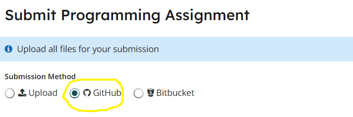

Homework 5
Last updated: Tue, 24 Oct 2023 16:39:08 -0400
Out: Mon Oct 23, 2023, 00:00 EST
UPDATE (2023-10-24): HW has been split into two parts.
Due (Part 1): Sun Oct 29, 2023, 23:59 EST
Due (Part 2): Sun Nov 05, 2023, 23:59 EST
Overview
In this assignment, we’ll continue to use The Design Recipe to write programs. In particular, we will create a basic game with enough components such that we will also need to pay attention to breaking down the program into an appropriate number of functions that each do one clear task. But since the components will interact with each other, it will take some thought to figure out what the appropriate "tasks" are.
This hw will be graded as follows:
correctness (6 + 6 = 12 pts)
design recipe (12 + 12 = 24 pts)
style (6 + 6 = 12 pts)
README (1 + 1 = 2 pts)
Setup
Create a new repository for this assignment by going to the CS450 Fall 2023 GitHub Organization page and clicking "New".

Name the repository <YOUR ACCOUNT NAME>-hw5 where <YOUR ACCOUNT NAME> is your GitHub account name.
For example, if my GitHub account is cs450student then I would name my hw5 repository cs450student-hw5.
Mark the repository as Private.
Check "Add a README file".
Add a .gitignore file for "Racket" to automatically ignore temporarily files.
When done click "Create repository".
Here is the hw5 starter repo. You won’t be able to fork it, but, you can copy the files into your own repo and then edit them.
Submitting
1 Before Submitting
Do not submit until all code has been thoroughly tested, independent of the autograder (if there is one), and you are reasonably sure the assignment is complete and correct.
The autograder is not a software development tool so it should not be used as one.
If you submit and get an autograder error, this means the code you wrote is not complete and correct and it’s up to you to figure out why.
The course staff is here and eager to help, but cannot do so if students don’t explain what they’ve tried first (e.g., "why is the autograder giving an error?" is not something we can help with).
The grading criteria (i.e., test suite) is subject to change. This means that the grade on the preliminary autograder test suite (if one is provided) is not the final grade.
2 Common Problems
3 Files
A submission must have the following files in the repository root:
hw5.rkt: Contains the hw solution code.
All defines should use the name specified in the exercise or homework description (ask if you are unsure) and should be provided.
The easiest way to ensure all necessary definitions are provided is to put as the second line in the file:
This automatically provides all definitions in the file. (The first line should be #lang racket)
All code should also follow proper Racket Style.
tests.rkt: This file should require hw5.rkt and define tests for it.
Specifically, it should define a rackunit test-suite which contains sufficient rackunit test cases (e.g., check-equal?, etc.) for each defined function.
README.md: Contains the required README information, including the GitHub repo url.
Also, the repository must have appropriate commit messages. See How to Write a Git Commit Message if you are unsure how to write a commit message.
4 GradeScope
When ready, submit this assignment to GradeScope using the "GitHub" submission feature with your hw5 repository selected.

HW Tasks
For this assignment we will implement a basic version of the Pong video game using the big-bang framework. Click this video link if you’ve never heard of Pong. You can use the video to guide your design decisions.
You will have more freedom of design in this assignment, e.g., choosing colors and sizes, but there are some requirements, described below.
UPDATE (2023-10-24): HW has been split into two parts.
Start with the bouncing ball big-bang program from lecture 7. Feel free to change the colors and other parameters such as scene size and ball size and speed.
The "game board" should have a dotted line down the middle to mark each player’s "side".
- Add two rectangular "paddles", each controlled by a different player. The paddles should only be able to move up and down and should never go (all the way) off the screen.
The left paddle is controlled by keyboard: "w" moves up and "s" moves down.
The right paddle is controlled by the mouse.
- The ball should start in the middle of the board with a random x and y velocity.
If it touches the top or bottom edge, it should bounce, like in the lecture code.
If it hits either paddle, it should also bounce.
If it touches the right or left edge of the board, the ball should reset to the middle with a new random x and y velocity.
If the ball hits either paddle, it should bounce. It’s up to you to determine what constitutes a "hit". A range of implementations will be acceptable, so long as the game "looks reasonable".
If the ball touches the right edge of the screen, the left player scores a point, and vice versa. Each player’s score should be displayed somewhere on their side. As described above, when a player scores, the ball should reset to the middle with a new random x and y velocity.
Look up the stop-when feature of big-bang, which allows specifying game ending behavior. The game should end when a player reaches 10 points. When a player wins, the game should display which player won and stop.
You should tweak the "parameters" of the game—
the board size, the paddle size, the ball size, the possible velocity ranges— so that the game is "playable", but we will leave you to judge what is "playble". Feel free to share your findings on piazza.
Do not just "try to get the code working". Doing so will not earn a good grade on this assignment.
As usual, all code must follow The Design Recipe. This means that data definitions should be created or updated to properly represent the needed data representations in the program. Further, all functions must have all the required Function Design Recipe components. In particular, you must be able to explain how you arrived at any piece of the code in the program. There should also be a test suite in a file named tests.rkt.
Also, functions should be split properly so that each performs "one clear task". One way to know when this is the case is if function is easy to name and explain concisely. Another way is if a function only processes one kind of data. Note that some game components depend on each other (e.g., processing the "score" might depend on the "ball" location), so which functions to write and what kind of data they process may require some careful thought. Also, be on the lookout for abstraction opportunities. You may need to refactor your code a few times before getting the appropriate functions.
Here is an approximation of a correct running program.